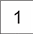
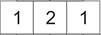
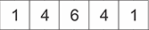
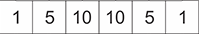
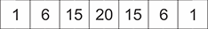
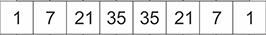

3.2 HIMPUNAN BAGIAN
Tadi, kalian sudah bisa menyatakan banyak himpunan bagian dari B = {a, b, c, d, e, f, g, h} dengan rumus 2n. Namun, bagaimana jika pertanyaannya seperti ini :
Diketahui B = {a, b, c, d, e, f, g, h}, maka tentukanlah banyak himpunan bagian dari himpunan B yang memiliki :
Caranya adalah dengan bantuan segitiga pascal. - 5 anggota
- Minimal 3 anggota
- Maksimal 3 anggota
- Kurang dari 3 anggota
- Lebih dari 3 anggota
*klik segitiga pascal untuk melihat penjelasan.
dan seterusnya...
Penjelasan :

Untuk himpunan bagian dari A = { } dengan n(A) = 0. Banyak himpunan bagiannya adalah 20 = 1
Tekan tombol di bawah ini untuk melihat penjelasan bagaimana cara membuat segitiga pascal
Lihat Penjelasan
Tekan tombol di bawah ini untuk melihat penjelasan bagaimana cara membuat segitiga pascal
Lihat Penjelasan

Untuk himpunan bagian dari A = {a, b} dengan n(A) = 2. Banyak himpunan bagiannya adalah 22 = 4
Tekan tombol di bawah ini untuk melihat penjelasan bagaimana cara membuat segitiga pascal
Lihat Penjelasan
Tekan tombol di bawah ini untuk melihat penjelasan bagaimana cara membuat segitiga pascal
Lihat Penjelasan

Untuk himpunan bagian dari A = {a, b, c, d} dengan n(A) = 4. Banyak himpunan bagiannya adalah 24 = 16
Tekan tombol di bawah ini untuk melihat penjelasan bagaimana cara membuat segitiga pascal
Lihat Penjelasan

Untuk himpunan bagian dari A = {a, b, c, d, e} dengan n(A) = 5. Banyak himpunan bagiannya adalah 25 = 32
Tekan tombol di bawah ini untuk melihat penjelasan bagaimana cara membuat segitiga pascal
Lihat Penjelasan

Untuk himpunan bagian dari A = {a, b, c, d, e, f} dengan n(A) = 6. Banyak himpunan bagiannya adalah 26 = 64
Tekan tombol di bawah ini untuk melihat penjelasan bagaimana cara membuat segitiga pascal
Lihat Penjelasan

Untuk himpunan bagian dari A = {a, b, c, d, e, f, g} dengan n(A) = 7. Banyak himpunan bagiannya adalah 27 = 128
Tekan tombol di bawah ini untuk melihat penjelasan bagaimana cara membuat segitiga pascal
Lihat Penjelasan
Tekan tombol di bawah ini untuk melihat penjelasan bagaimana cara membuat segitiga pascal
Lihat Penjelasan
Tekan tombol di bawah ini untuk melihat penjelasan bagaimana cara membuat segitiga pascal
Tekan tombol di bawah ini untuk melihat penjelasan bagaimana cara membuat segitiga pascal
Tekan tombol di bawah ini untuk melihat penjelasan bagaimana cara membuat segitiga pascal
Tekan tombol di bawah ini untuk melihat penjelasan bagaimana cara membuat segitiga pascal
Tekan tombol di bawah ini untuk melihat penjelasan bagaimana cara membuat segitiga pascal
Tekan tombol di bawah ini untuk melihat penjelasan bagaimana cara membuat segitiga pascal
Tekan tombol di bawah ini untuk melihat penjelasan bagaimana cara membuat segitiga pascal
Tekan tombol di bawah ini untuk melihat penjelasan bagaimana cara membuat segitiga pascal
Tekan tombol di bawah ini untuk melihat penjelasan bagaimana cara membuat segitiga pascal
Jadi, angka-angka pada segitiga pascal ini mewakili banyak himpunan bagian sekian anggota dari suatu himpunan.
Lalu, bagaimana menggunakan segitiga pascal untuk menjawab pertanyaan di atas?
Perhatikan kembali himpunan B. Banyak anggota dari himpunan B adalah 8, artinya segitiga pascal dibuat hingga bertemu angka 8. Sehingga didapatkan :
Uraiannya dapat dilihat pada Tabel 3.2.4 di bawah ini.
| Himpunan bagian dengan : | Banyak himpunan |
|---|---|
| 0 anggota | 1 |
| 1 anggota | 8 |
| 2 anggota | 28 |
| 3 anggota | 56 |
| 4 anggota | 70 |
| 5 anggota | 56 |
| 6 anggota | 28 |
| 7 anggota | 8 |
| 8 anggota | 1 |
| Total banyak himpunan bagian | 256 |
Mari kita coba jawab pertanyaan di atas.
Tekan tombol di bawah ini untuk memunculkan pertanyaan
 Petunjuk (klik untuk menyembunyikan petunjuk)
Petunjuk (klik untuk menyembunyikan petunjuk)- Isilah kotak kosong dengan jawaban yang tepat.
- Setiap kamu mengklik kotak jawaban, akan ada petunjuk yang muncul pada Tabel 3.2.4. Ini berarti petunjuk untuk kamu menjawab soal.
- Jika jawaban kamu benar, kotak akan berubah warna menjadi hijau.
- Jika jawaban kamu salah, kotak akan berubah warna menjadi merah.
- Soal selanjutnya akan muncul jika jawaban kamu benar.
-
5 anggota
Jawaban : -
Minimal 3 anggota
Minimal 3 anggota maksudnya adalah paling sedikit memiliki 3 anggota. Ini artinya "lebih dari sama dengan 3", sehingga jawabannya adalah jumlah dari banyak himpunan bagian dengan 3 anggota, 4 anggota, 5 anggota, 6 anggota, 7 anggota, dan 8 anggota
Jawaban : -
Maksimal 3 anggota
Maksimal 3 anggota maksudnya adalah paling banyak memiliki 3 anggota. Ini artinya "kurang dari sama dengan 3", sehingga jawabannya adalah jumlah dari banyak himpunan bagian dengan 0 anggota, 1 anggota, 2 anggota, dan 3 anggota
Jawaban : -
Kurang dari 3 anggota
Jawabannya adalah jumlah dari banyak himpunan bagian dengan 0 anggota, 1 anggota, dan 2 anggota
Jawaban : -
Lebih dari 3 anggota
Jawabannya adalah jumlah dari banyak himpunan bagian dengan 4 anggota, 5 anggota, 6 anggota, 7 anggota, dan 8 anggota
Jawaban :
Berdasarkan kegiatan diatas, kalian mampu menyatakan banyak himpunan bagian yang mungkin dibuat dari suatu himpunan.